← भाग 2 की सूची · पूरा अध्याय पढ़ें →
यह वही अध्याय है जिसे गद्य से नहीं, आँख से याद किया जाता है। यहाँ हर चित्र किसी दृश्य पहचान को पढ़ा रहा है, सजावट के लिए एक भी नहीं; कैप्शन में वही शब्द मोटे हैं जो विकल्प बनकर आते हैं। पूरी सूचियों एवं तालिकाओं के लिए अध्याय देखें — यह पृष्ठ केवल दोहराने के लिए है।
1. सम्पूर्ण कालखंड एक पट्टी में
पट्टी की चौड़ाई कालावधि के अनुपात में नहीं; कालखंड परस्पर अतिव्यापी हैं।
2. मंदिर स्थापत्य — नागर · द्रविड़ · वेसर
नागर — कंदरिया महादेव, खजुराहो
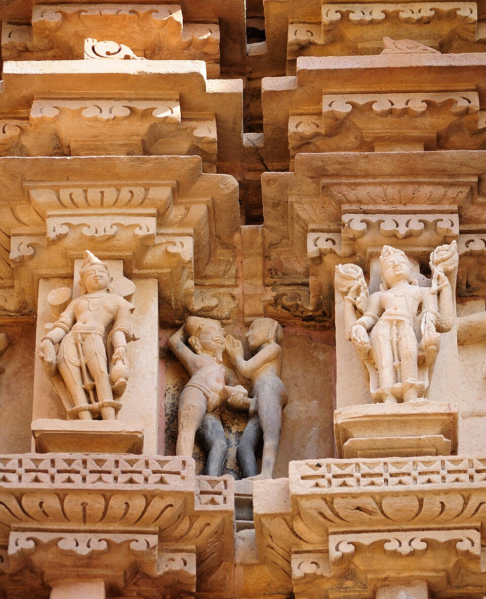
- वक्ररेखीय शिखर, शीर्ष पर आमलक + कलश
- चिपके लघु उरः-शृंग = शेखरी; ऊँची जगती
- न गोपुरम, न प्राकार, न तालाब
- विद्याधर (चंदेल), ~1030 ई.
CC BY-SA 4.0 · Dey.sandip
द्रविड़ — बृहदेश्वर, तंजावुर
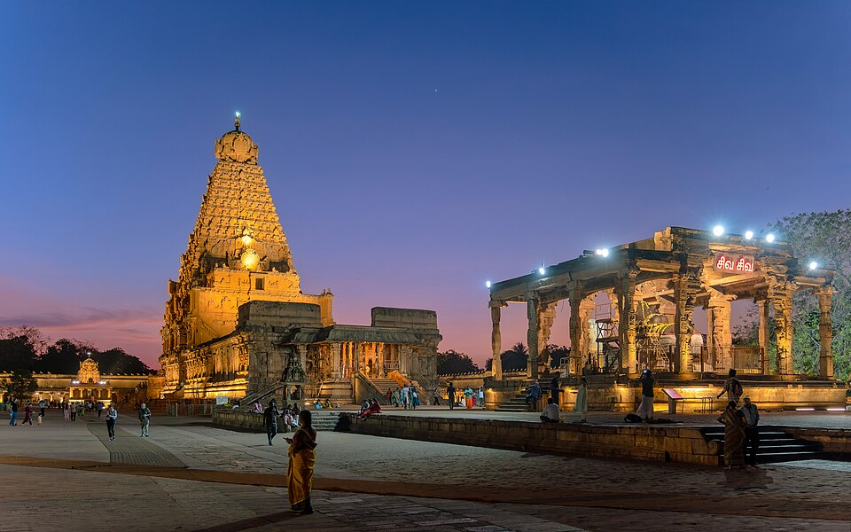
- पिरामिडाकार विमान, उसके ऊपर गुंबदाकार शिखर + स्तूपिका
- प्राकार, गोपुरम, पुष्करिणी, नंदी
- राजराज प्रथम (चोल), ~1010 ई. · UNESCO 1987
CC BY-SA 4.0 · Original: Rainer Halama Derivative work: UnpetitproleX
वेसर — होयसलेश्वर, हलेबिड
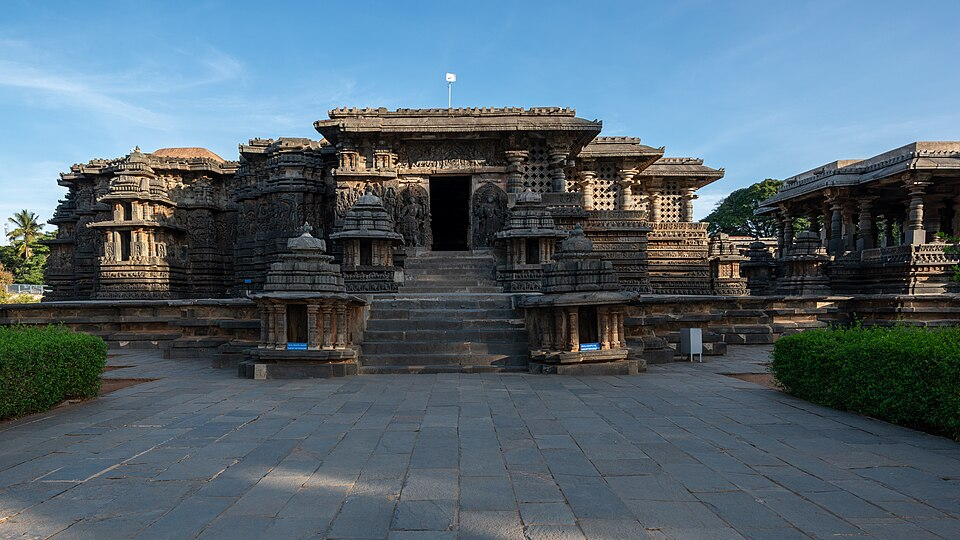
- द्रविड़ योजना + नागर विवरण; तारकाकार तल-योजना
- मुलायम सोपस्टोन — सूक्ष्मतम नक्काशी, शिल्पी-हस्ताक्षर
- द्विकूट; विष्णुवर्धन · UNESCO 2023
- शुद्ध वेसर — पापनाथ, पट्टदकल
CC BY-SA 4.0 · Rohit Sharma
नागर हिमालय–विंध्य · द्रविड़ कृष्णा–कन्याकुमारी · वेसर दोनों के बीच (दक्कन)। पहचान — “आमलक-कलश नागर का, स्तूपिका द्रविड़ की; गोपुरम-प्राकार-तालाब केवल द्रविड़ में।” शब्द-जाल: नागर में शिखर = पूरी वक्र संरचना, द्रविड़ में विमान = पूरी संरचना और शिखर = उसके ऊपर का गुंबद।
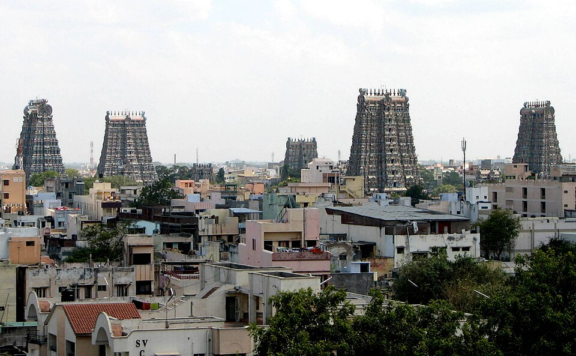
पिता–पुत्र न उलटें — बृहदेश्वर राजराज प्रथम, गंगैकोंडचोलपुरम राजेंद्र प्रथम, ऐरावतेश्वर राजराज द्वितीय।
- नागर शिखर के आकार
- लतिना / रेखा-प्रासाद एकल वक्र शिखर · ओडिशा में रेखा देउल
- फमसना चौड़ा, सीधी ढलान, प्रायः मंडप पर · पीढ़ा देउल
- वल्लभी आयताकार, wagon-vault · खाकरा देउल
- शेखरी एवं भूमिज लतिना के विकसित रूप — खजुराहो मुख्यतः शेखरी
- चार क्षेत्रीय उप-शैलियाँ
- ओडिशा / कलिंग देउल + जगमोहन + नटमंदिर + भोगमंडप · लिंगराज, जगन्नाथ, कोणार्क
- खजुराहो / चंदेल कंदरिया महादेव, लक्ष्मण, चौंसठ योगिनी (प्राचीनतम, ग्रेनाइट)
- सोलंकी / मारू-गुर्जर दिलवाड़ा (विमल शाह 1031; वस्तुपाल-तेजपाल 1230), मोढेरा, रानी की वाव
- गुप्त (आदि नागर) मध्य भारत एवं उ.प्र. · सांची मंदिर 17, भितरगाँव, देवगढ़
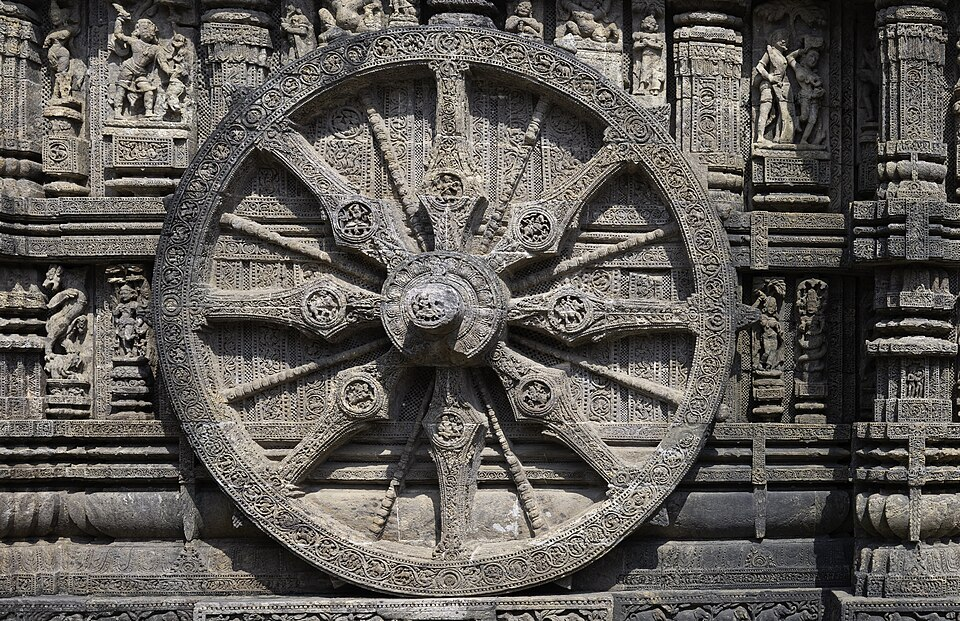
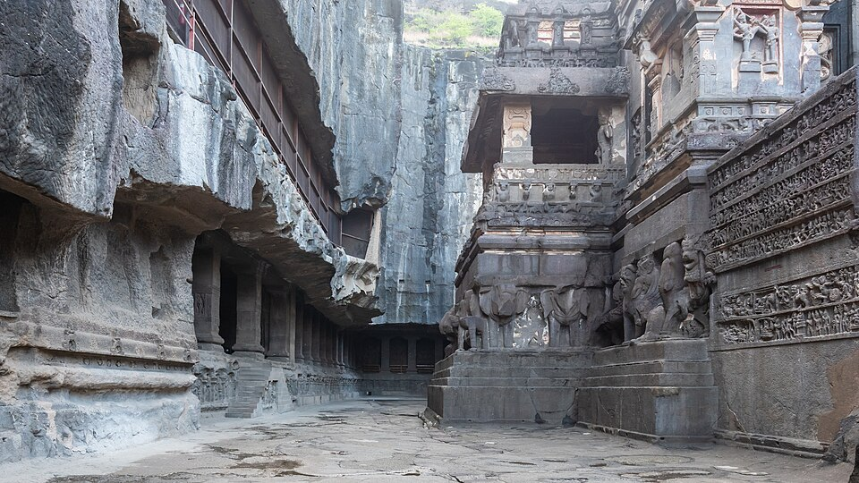
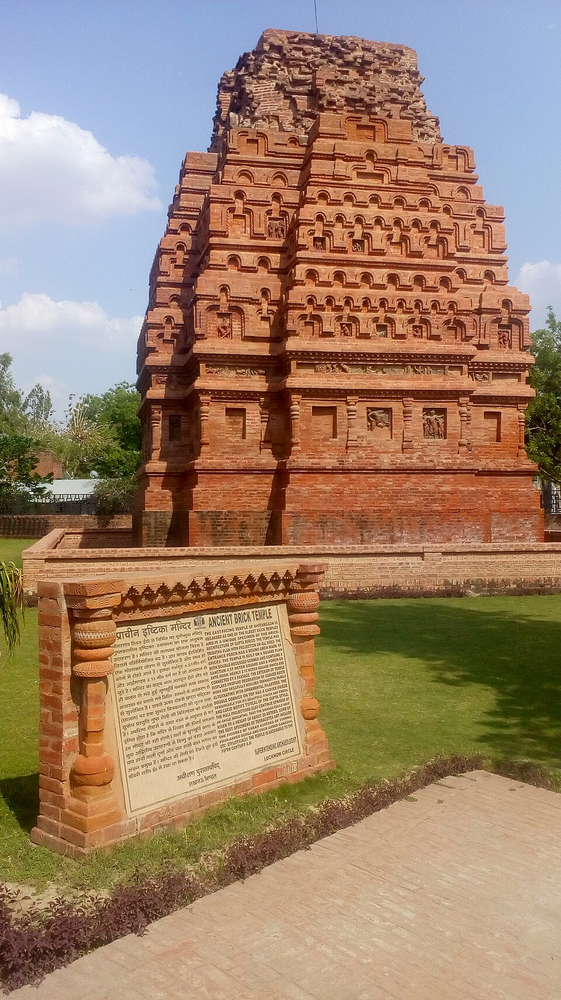
3. मूर्तिकला — मथुरा बनाम गांधार
दोनों कुषाण युग की, दोनों का संरक्षक कनिष्क — पर पत्थर, मुख, वस्त्र और प्रभामंडल चारों अलग।
मथुरा — उत्तर प्रदेश
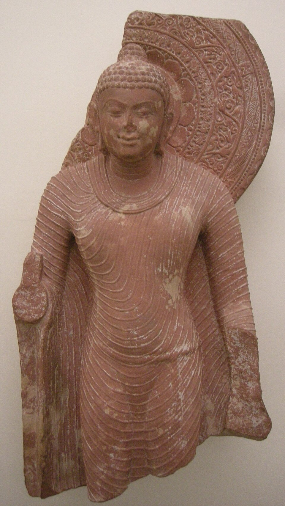
- चित्तीदार लाल बलुआ पत्थर (सीकरी)
- मुख गोल, प्रसन्न, ऊर्जावान; आँखें खुलीं
- वस्त्र पारदर्शी, दायाँ कंधा खुला; प्रभामंडल अलंकृत
- बौद्ध + जैन + ब्राह्मण — तीनों; प्रभाव देशज (यक्ष परंपरा)
- कंकाली टीला; माट — कनिष्क की शिरविहीन प्रतिमा
CC BY-SA 3.0 · Unknown authorUnknown author
गांधार — पेशावर–तक्षशिला–स्वात
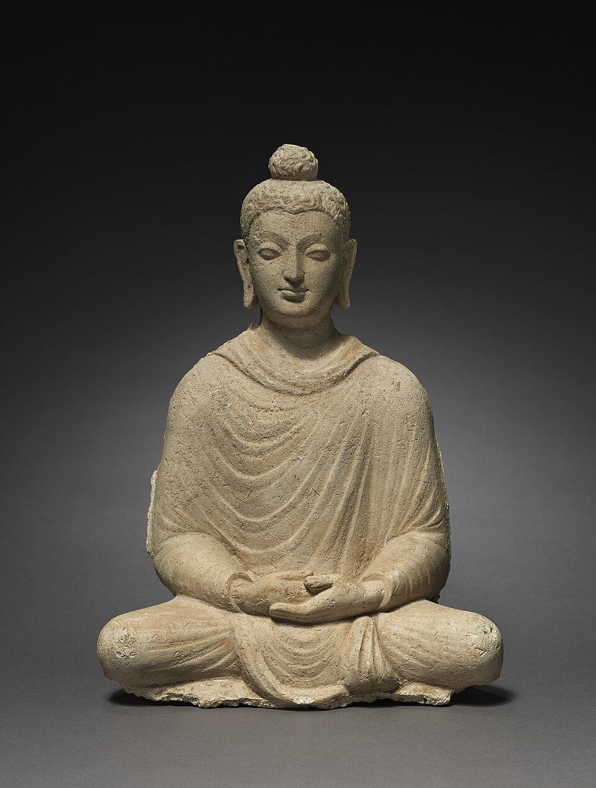
- धूसर/नीली शिस्ट, कहीं स्टको
- मुख ध्यानमग्न; आँखें अधखुली; लहरदार केश
- मोटी यथार्थवादी सिलवटें (रोमन टोगा), दोनों कंधे ढके; प्रभामंडल सादा
- केवल बौद्ध — जैन/हिंदू नहीं; प्रभाव यूनानी-रोमन
- तक्षशिला, हड्डा, बामियान, जौलियाँ
CC0 · anonymous
कुंजी — गांधार = विदेशी रूप, सादा प्रभामंडल, केवल बौद्ध। मथुरा = देशज रूप, अलंकृत प्रभामंडल, तीनों धर्म। तीसरी शैली अमरावती — कृष्णा–गोदावरी डेल्टा, सातवाहन-इक्ष्वाकु, श्वेत चूना-पत्थर, कथात्मक पैनल; नागार्जुनकोंडा। “बुद्ध की प्रथम मूर्ति?” — अधिकांश आधुनिक मत: दोनों में समकालीन एवं स्वतंत्र रूप से; विकल्प में “दोनों” हो तो वही सुरक्षित।
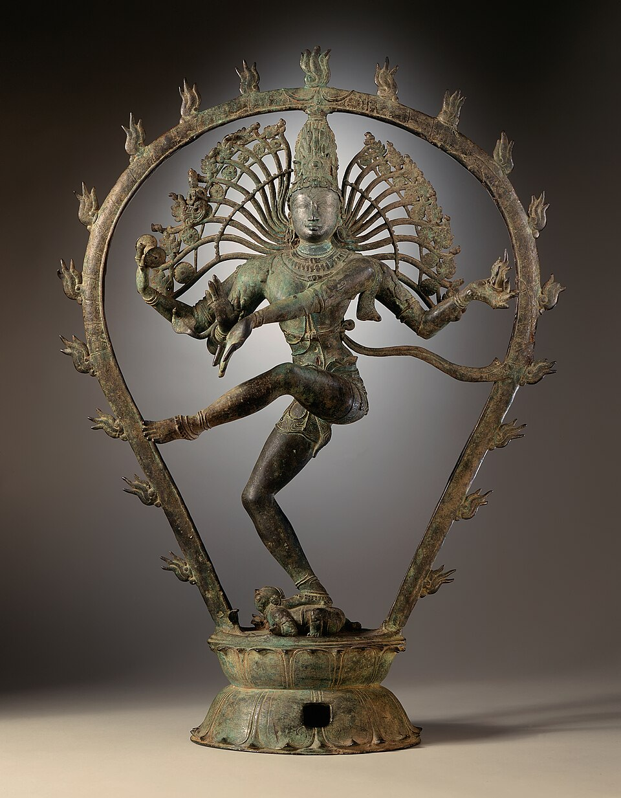
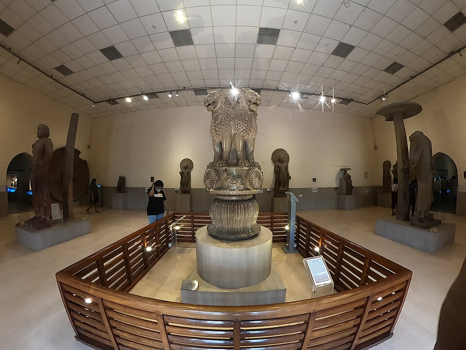
4. चित्रकला — शैली ही पहचान है
पद्मपाणि — अजंता गुफा 1

- टेम्पेरा / फ्रेस्को-सेक्को — सूखे प्लास्टर पर
- रेखा एवं भाव प्रधान, छाया-प्रकाश; वाकाटक हरिषेण
- चित्र गुफा 1, 2, 16, 17 में; “मरणासन्न राजकुमारी” गुफा 16
Public domain · Unknown authorUnknown author
मुगल लघुचित्र
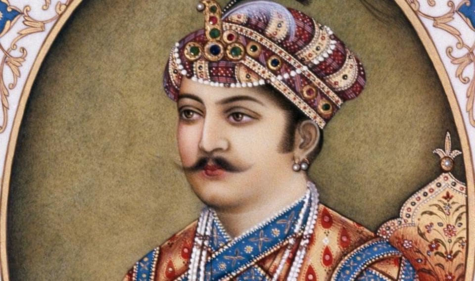
- दरबारी, धर्मनिरपेक्ष, यथार्थवादी — देवता नहीं
- अकबर — तस्वीरखाना, दसवंत, बसावन
- जहाँगीर — मंसूर “नादिर-उल-अस्र”, अबुल हसन “नादिर-उज-जमाँ”
Public domain · Unknown authorUnknown author
कांगड़ा — पहाड़ी का चरमोत्कर्ष
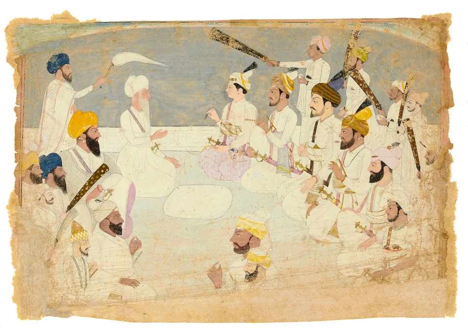
- कोमल गीतात्मकता, हरे-नीले परिदृश्य
- राजा संसार चंद; गीतगोविंद, बिहारी सतसई
- क्रम — बसोहली (भृंग-पंख जड़ाई) → गुलेर (नैनसुख) → कांगड़ा
Public domain · Attributed to either Bassia, the brother of Purkhu, or Bassia's son Shiba
मधुबनी / मिथिला — बिहार
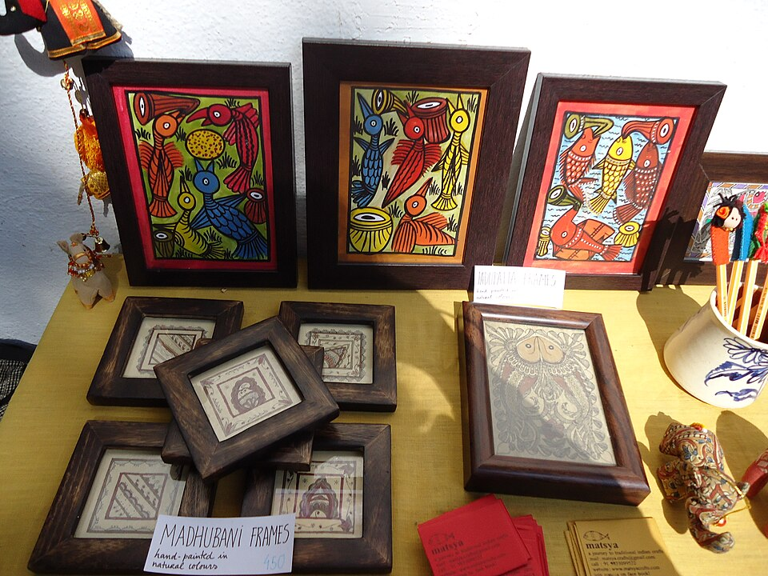
- रिक्त स्थान नहीं छोड़ा जाता — अचूक पहचान
- दीवार-आँगन पर, प्रायः स्त्रियों द्वारा; कोहबर
- सीता देवी, गंगा देवी, बउआ देवी
CC BY-SA 3.0 · Rohini
वारली — महाराष्ट्र
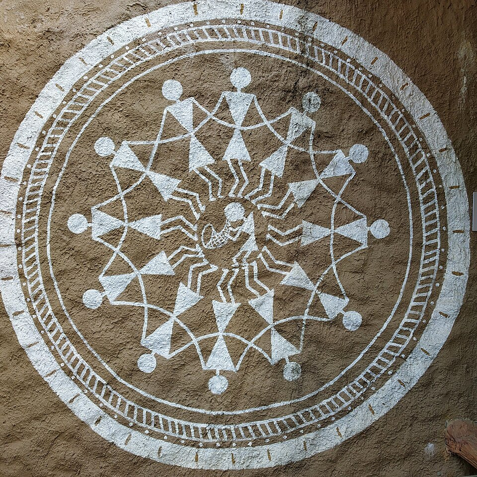
- गेरुई पृष्ठभूमि पर केवल सफेद (चावल का लेप)
- आकृतियाँ त्रिकोण + वृत्त + रेखा से
- केंद्र में तारपा नृत्य का घेरा; जिव्या सोमा मशे
CC BY-SA 4.0 · Omrmankar
चुनार रागमाला (1591) — बूँदी के भोज सिंह ने चुनार (मिर्जापुर) में मुगल-प्रशिक्षित चित्रकारों से बनवाई; यही बूँदी एवं कोटा शैलियों का आदि-प्रतिमान। साथ में अवध/लखनऊ एवं फर्रुखाबाद शैलियाँ, कंपनी शैली के केंद्र वाराणसी एवं लखनऊ, तथा लोक में संझी (मथुरा) एवं कोहबर (पूर्वी UP)।
5. वाद्य वर्गीकरण एवं घराने
तत (तंतु) — वीणा
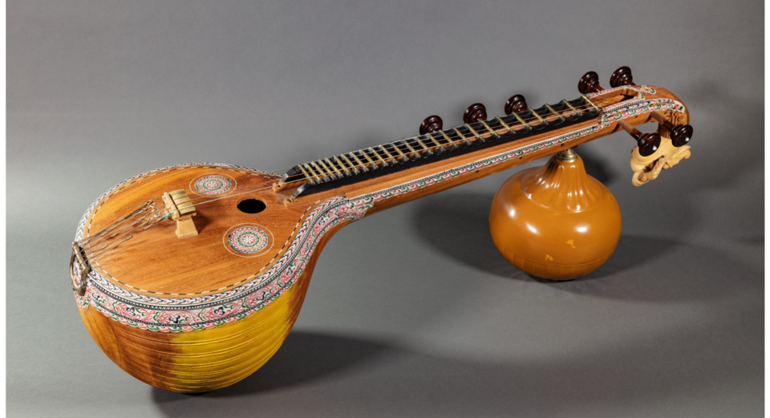
- ध्वनि तार के कंपन से · Chordophone
- सितार, सरोद, सारंगी, तानपूरा, संतूर, सुरबहार, रबाब, वायलिन
CC BY-SA 4.0 · Original: unknownPhotograph: Katharina Common
अवनद्ध — तबला
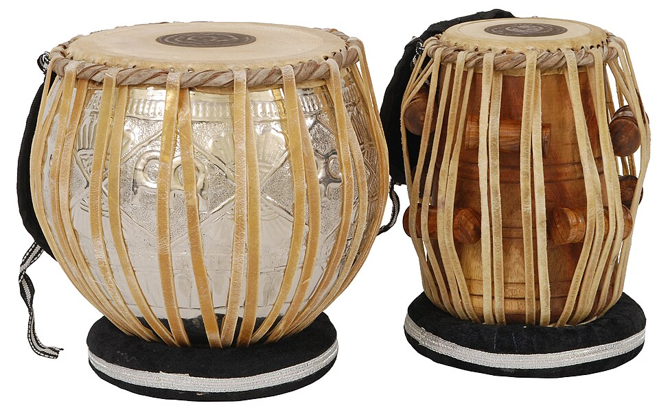
- ध्वनि चमड़े की झिल्ली पर आघात से · Membranophone
- मृदंगम्, पखावज, ढोलक, नगाड़ा, खोल, डफ, कंजीरा, चेंडा
CC BY-SA 4.0 · http://muzyczny.pl
तत = तार · सुषिर = फूँक (बाँसुरी, शहनाई, नादस्वरम्, शंख, हारमोनियम) · अवनद्ध = चमड़ा · घन = ठोस स्वयं कंपित, न झिल्ली न तार (मंजीरा, झाँझ, घटम्, जलतरंग, खड़ताल, मोरसिंग, घुँघरू)।
घटम् एवं जलतरंग पात्र हैं पर झिल्ली नहीं — इसलिए घन। कंजीरा पर खाल चढ़ी है — इसलिए अवनद्ध (झाँझ लगे होने पर भी)। हारमोनियम धौंकनी से रीड कंपित करता है — इसलिए सुषिर, तत नहीं; मोरसिंग मुँह से बजने पर भी घन।
दिल्ली (सिद्धार खाँ ढाढ़ी — आदि-घराना, “दो उँगली का बाज”) · अजराड़ा (मेरठ) · लखनऊ · फर्रुखाबाद · बनारस (पं. राम सहाय) · पंजाब (अल्ला रक्खा, जाकिर हुसैन)। बीच के चार उत्तर प्रदेश के — यही पूछा जाता है।
खयाल के किराना (कैराना, शामली), आगरा, रामपुर–सहसवान एवं जयपुर–अतरौली (अतरौली, अलीगढ़); सितार का इमदादखानी/एटावा (इटावा); कथक के लखनऊ (भाव) एवं बनारस (नटवरी) घराने। ठुमरी का उत्कर्ष वाजिद अली शाह के लखनऊ दरबार में; खयाल के विकास में हुसैन शाह शर्की (जौनपुर); तानसेन के गुरु स्वामी हरिदास वृंदावन के; भातखंडे (10 थाट) ने लखनऊ का मैरिस कॉलेज खोला।
6. आठ शास्त्रीय नृत्य — वेशभूषा एवं मुद्रा से पहचानिए
भरतनाट्यम् — तमिलनाडु
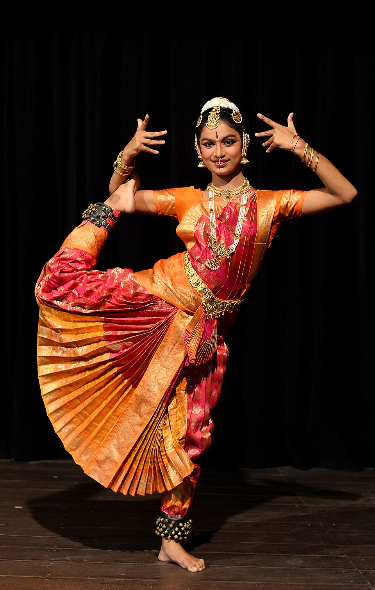
- मुद्रा अरमंडी, स्थिर धड़, रेखागणितीय; एकाहार्य
- मूल सदिर/दासीअट्टम; क्रम अलारिप्पु→वर्णम्→तिल्लाना
- ग्रंथ अभिनय दर्पण; तंजौर चौकड़ी; रुक्मिणी देवी अरुंडेल
CC BY-SA 3.0 · Augustus Binu/ facebook
कथक — उत्तर प्रदेश
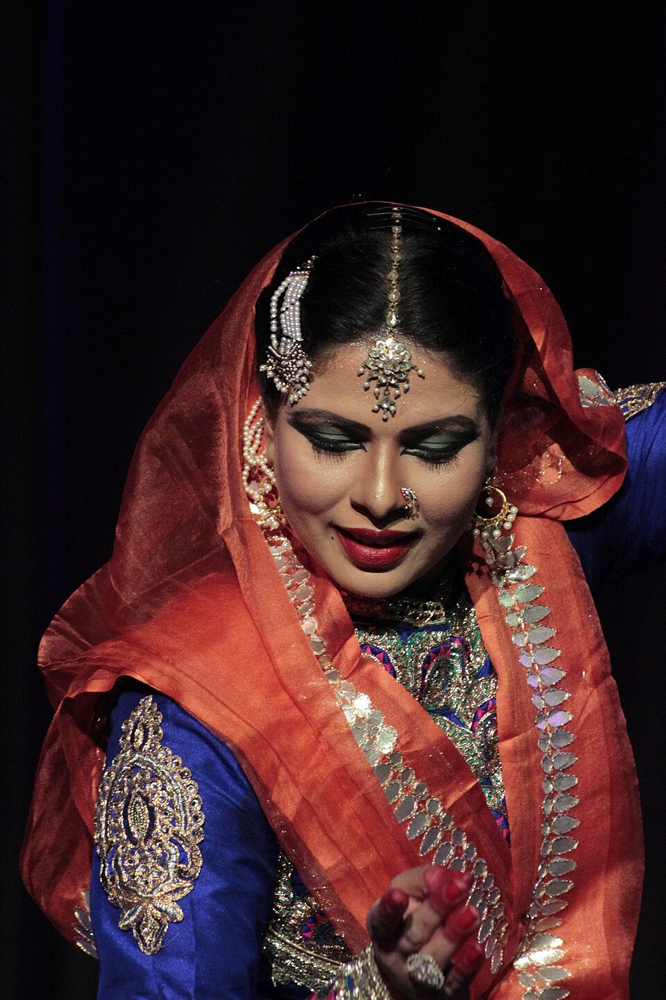
- सीधा धड़, खड़े पैर; तत्कार एवं चक्कर; घुँघरू सर्वाधिक
- एकमात्र नृत्य जिस पर फारसी-मुगल प्रभाव; संगीत हिंदुस्तानी
- घराने — लखनऊ, जयपुर, बनारस, रायगढ़; बिरजू महाराज
CC BY-SA 4.0 · Suyash Dwivedi
कथकली — केरल
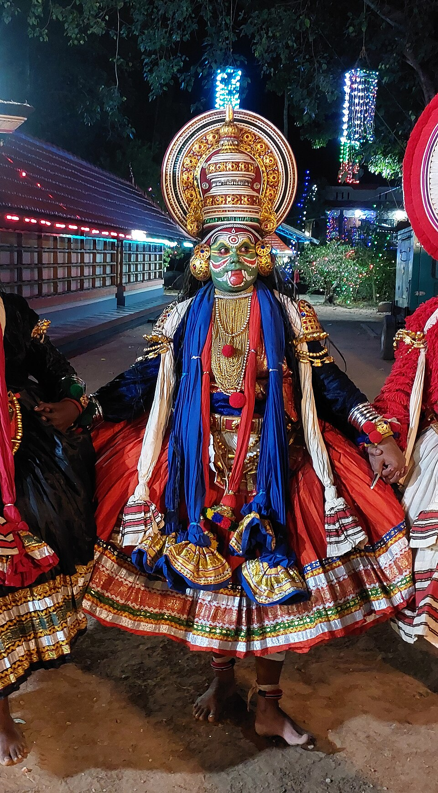
- विशाल चुट्टी मुख-सज्जा; पच्चा (हरा, नायक), कत्ति, ताड़ी, करी, मिनुक्कु
- नृत्य-नाटिका; परंपरागत रूप से केवल पुरुष; नेत्र-अभिनय
- वाद्य चेंडा-मद्दलम्; वल्लत्तोल — केरल कलामंडलम् (1930)
CC BY-SA 4.0 · Vis M
कुचिपुड़ी — आंध्र प्रदेश
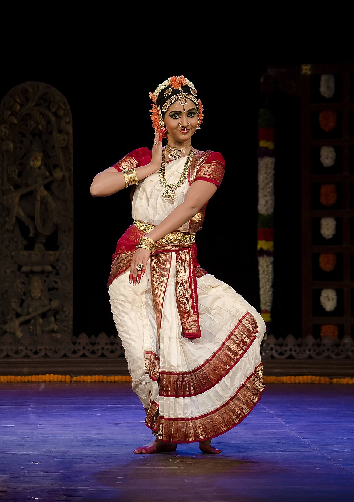
- तरंगम् — थाली के किनारों पर नृत्य, सिर पर जल-कलश
- सिद्धेंद्र योगी; मूलतः पुरुष भागवतुलु परंपरा
- कलाकार बोलता एवं गाता भी है; भामाकलापम्
CC BY-SA 3.0 · Augustus Binu/ facebook
ओडिसी — ओडिशा
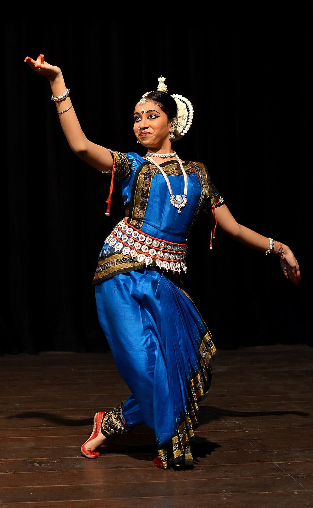
- त्रिभंग एवं चौक — अचूक पहचान; अत्यंत मूर्तिवत्
- महरी (देवदासी) एवं गोटीपुआ परंपराएँ
- विषय गीतगोविंद; ग्रंथ अभिनय चंद्रिका; केलुचरण महापात्र
CC BY-SA 3.0 · Augustus Binu/ facebook
मणिपुरी — मणिपुर
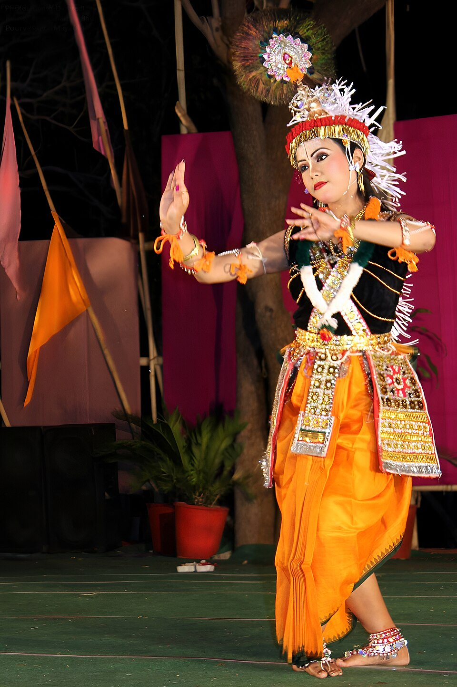
- घुँघरू नहीं, पैर का प्रहार नहीं; गति गोलाकार
- स्त्री-वेश पोतलोई (बेलनाकार घाघरा); रास लीला
- पुंग चोलोम; लाई हराओबा; संकीर्तन UNESCO 2013
CC BY-SA 4.0 · Suyash Dwivedi
मोहिनीअट्टम् — केरल
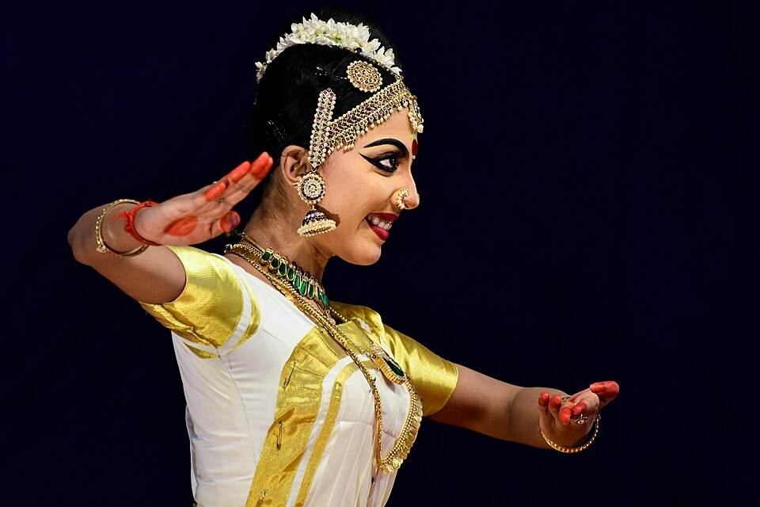
- श्वेत-स्वर्ण कसावु साड़ी, बायीं ओर जूड़ा; अंदोलिका गति
- लास्य-प्रधान, एकल, स्त्री-नृत्य; संगीत सोपान
- स्वाति तिरुनाल; कल्याणिकुट्टी अम्मा
CC BY-SA 4.0 · Shagil Kannur
सत्रिया — असम
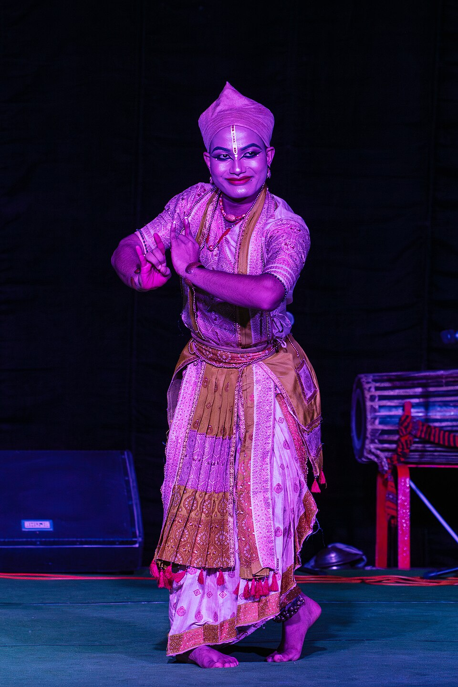
- शंकरदेव द्वारा; सत्र में भोकोत द्वारा
- अंकीया नाट एवं भाओना; वाद्य खोल
- 2000 में मान्यता — सबसे नवीनतम
CC BY-SA 4.0 · Joydeep Chakraborty
भरतनाट्यम् (तमिलनाडु) · कथा=कथक (उ.प्र.) · कहे=कथकली (केरल) · कुचिपुड़ी (आंध्र) · ओडिसी (ओडिशा) · मणिपुरी (मणिपुर) · मोहे=मोहिनीअट्टम् (केरल) · सत्रिया (असम)। दो पक्के तथ्य — केरल अकेला दो नृत्य देता है, कथक अकेला उत्तर भारतीय है। मान्यता संगीत नाटक अकादमी (1953) देती है; संस्कृति मंत्रालय कुछ संदर्भों में छऊ जोड़कर नौ बताता है।
दोनों दक्षिण भारतीय, दोनों में कर्नाटक संगीत एवं समान हस्त-मुद्राएँ — भेद चार:
(1) भरतनाट्यम् एकाहार्य, कलाकार संवाद नहीं बोलता; कुचिपुड़ी नृत्य-नाटिका, कलाकार बोलता-गाता है।
(2) धड़ स्थिर बनाम तरल एवं छलाँग-युक्त। (3) तरंगम् केवल कुचिपुड़ी में।
(4) मूल — देवदासी/सदिर (स्त्री) बनाम भागवतुलु (पुरुष ब्राह्मण)।
और — कथकली (पुरुष, विशाल वेश) बनाम मोहिनीअट्टम् (स्त्री, लास्य), दोनों केरल के;
ओडिसी = त्रिभंग, भरतनाट्यम् = अरमंडी, कथक = सीधी खड़ी मुद्रा।
7. षड्दर्शन — प्रवर्तक कभी न भूलें
सांख्य–योग (सिद्धांत + साधना) = कपिल · पतंजलि · न्याय–वैशेषिक (तर्क + तत्व-वर्गीकरण) = गौतम · कणाद · पूर्व मीमांसा–वेदांत (कर्म + ज्ञान) = जैमिनि · बादरायण। “गौतम = वैशेषिक” या “कणाद = न्याय” का उलटफेर सबसे आम distractor है।
आस्तिक — वेद को प्रमाण मानने वाले
- सांख्य (कपिल) — द्वैतवादी, निरीश्वरवादी; पुरुष + प्रकृति; 25 तत्व; सत्कार्यवाद
- योग (पतंजलि) — “सेश्वर सांख्य”; अष्टांग योग
- न्याय (गौतम) — तर्कशास्त्र; 16 पदार्थ; पंचावयव अनुमान
- वैशेषिक (कणाद) — परमाणुवाद; 7 पदार्थ
- पूर्व मीमांसा (जैमिनि) — कर्मकांड; वेद अपौरुषेय; अपूर्व
- वेदांत (बादरायण) — ब्रह्मसूत्र; प्रस्थानत्रयी
नास्तिक — वेद को प्रमाण न मानने वाले
- चार्वाक/लोकायत — भौतिकवाद; केवल प्रत्यक्ष प्रमाण; चार भूत (आकाश नहीं)
- बौद्ध — अनात्मवाद, क्षणिकवाद; योगाचार (असंग-वसुबंधु), शून्यवाद (नागार्जुन)
- जैन — अनेकांतवाद, स्याद्वाद, सप्तभंगी नय
- आजीवक (मक्खलि गोसाल) — नियतिवाद; बराबर गुफाएँ इन्हीं को दान
“नास्तिक” का अर्थ ईश्वर को न मानना नहीं, वेद को प्रमाण न मानना है — इसीलिए सांख्य निरीश्वरवादी होकर भी आस्तिक है। प्रमाणों की संख्या: चार्वाक 1 · वैशेषिक 2 · सांख्य-योग 3 · न्याय 4 · मीमांसा 6।
8. कालक्रम — अनुक्रम प्रश्नों के लिए
9. उत्तर प्रदेश — पूरा अध्याय एक मानचित्र में

- UNESCO (4) — ताजमहल 1983, आगरा का किला 1983, फतेहपुर सीकरी 1986, सारनाथ 2026; पहले तीन मुगल, चौथा बौद्ध। सारनाथ — 25 जुलाई 2026, 48वाँ सत्र, बुसान; नामांकन में चौखंडी स्तूप एवं अवशेष (मृगदाव); 1998 से अनंतिम सूची में। यहाँ धर्मराजिका अशोककालीन, धमेख गुप्तकालीन।
- अमूर्त विरासत — रामलीला (2008; रामनगर की 31 दिन) एवं कुंभ मेला (2017, प्रयागराज); महाकुंभ 2025 — 13 जनवरी–26 फरवरी।
- स्थापत्य — गुप्त (भितरगाँव, देवगढ़) · शर्की (जौनपुर) · मुगल (बुलंद दरवाजा = गुजरात विजय 1573 की स्मृति, ~54 मी.) · अवध शैली — बड़ा इमामबाड़ा (आसफ-उद-दौला, 1784; वास्तुकार हाफिज किफायतुल्लाह; अकाल-राहत परियोजना; बिना-स्तंभ वॉल्टेड हॉल; भूलभुलैया = भार घटाने की युक्ति), रूमी दरवाजा।
- कला — मथुरा मूर्तिकला (कंकाली टीला, माट) · चुनार रागमाला 1591 · संझी एवं कोहबर।
- संगीत-नृत्य-लोक — कथक की जन्मभूमि; तबले के 4 घराने; ठुमरी; बनारस की शहनाई (बिस्मिल्लाह खाँ); नौटंकी (हाथरस = संगीत-प्रधान, कानपुर = संवाद-प्रधान), चरकुला एवं रासलीला (ब्रज), आल्हा (बुंदेलखंड), गुलाबो-सिताबो कठपुतली।
- GI — संख्या में UP देश में प्रथम (70+), तमिलनाडु द्वितीय: बनारसी साड़ी, लखनऊ चिकनकारी, कन्नौज इत्र (देग-भपका), कालानमक चावल (सिद्धार्थनगर), भदोही कालीन, मुरादाबाद धातु शिल्प। GI अधिनियम 1999 (लागू 2003), रजिस्ट्री चेन्नई; प्रथम GI दार्जिलिंग चाय; राज्य की ODOP योजना 2018।
10. मास्टर ट्रैप — जहाँ नाम एक, वस्तु दो
- दो उदयगिरि — विदिशा (म.प्र.) = गुप्तकालीन, हिंदू, वराह पैनल, चंद्रगुप्त द्वितीय। उदयगिरि–खंडगिरि (भुवनेश्वर) = जैन, खारवेल, हाथीगुम्फा अभिलेख।
- दो कैलास — कैलास (एलोरा, गुफा 16) = राष्ट्रकूट कृष्ण प्रथम, एकाश्म। कैलासनाथ (कांचीपुरम) = पल्लव राजसिंह, संरचनात्मक।
- दो विरूपाक्ष — पट्टदकल (चालुक्य; रानी लोकमहादेवी, 8वीं सदी; कांचीपुरम के कैलासनाथ पर आधारित; UNESCO 1987) एवं हम्पी (विजयनगर)। वंश पूछा जाए तो स्थान देखिए।
- तीन सूर्य मंदिर — कोणार्क (नरसिंहदेव प्रथम, पूर्वी गंग, ~1250) · मोढेरा (भीम प्रथम, सोलंकी, 1026; शिखर शेष नहीं) · मार्तंड (ललितादित्य मुक्तापीड़, कार्कोट, कश्मीर, 8वीं सदी)।
- कुचिपुड़ी बनाम भरतनाट्यम् — भरतनाट्यम् एकाहार्य, संवाद नहीं, स्थिर धड़, देवदासी मूल; कुचिपुड़ी नृत्य-नाटिका, कलाकार बोलता-गाता है, भागवतुलु मूल, तरंगम् केवल इसी में। सत्रिया की मान्यता 2000 (1958 नहीं)।
- होयसल त्रयी — तीनों UNESCO 2023, पर बेलूर = चेन्नकेशव (विष्णु), हलेबिड = होयसलेश्वर (शिव, द्विकूट), सोमनाथपुर = केशव (त्रिकूट)।
- कठपुतली के मिलते नाम — बोम्मलट्टम (त.नाडु) = डोर, तोलु बोम्मलाटा (आंध्र) = छाया, रंगीन, रावणछाया (ओडिशा) = छाया, रंगहीन, यमपुरी (बिहार) = दंड, जोड़-रहित।
नागर = शिखर + आमलक + कलश · द्रविड़ = विमान + गोपुरम + प्राकार + तालाब · वेसर = दोनों का मिश्रण (पापनाथ)। “गोपुरम नागर शैली का अंग है” — गलत। मथुरा = लाल चित्तीदार बलुआ पत्थर + अलंकृत प्रभामंडल + तीनों धर्म; गांधार = धूसर शिस्ट + सादा प्रभामंडल + केवल बौद्ध; अमरावती = श्वेत चूना-पत्थर + सातवाहन/इक्ष्वाकु। घटम्-जलतरंग = घन, कंजीरा = अवनद्ध, हारमोनियम = सुषिर। सत्रिया = 2000, तरंगम् = कुचिपुड़ी, मणिपुरी में घुँघरू नहीं, ओडिसी = त्रिभंग। UNESCO 45 (37 सांस्कृतिक + 7 प्राकृतिक + 1 मिश्रित = कंचनजंगा) · अमूर्त विरासत 16 · शास्त्रीय भाषाएँ 11।
एक बार पढ़कर भूल जाना स्वाभाविक है। बढ़ते अंतराल पर दोहराने से वही तथ्य दीर्घकालिक स्मृति में बैठता है। हर बार पूरा अध्याय नहीं — केवल यह पृष्ठ।
- दिन 0 पूरा अध्याय पढ़ें, स्वयं-जाँच के प्रश्न स्वयं हल करें
- दिन 1 केवल यह पृष्ठ — मानचित्र, समयरेखा, सूत्र
- दिन 7 यह पृष्ठ + अध्याय की केवल तालिकाएँ एवं ट्रैप-बॉक्स
- दिन 21 यह पृष्ठ; जो सूत्र भूल गए, उन्हीं के खंड दोबारा पढ़ें
- दिन 45 यह पृष्ठ + अध्याय के स्वयं-जाँच प्रश्न दोबारा
- परीक्षा से 7 दिन केवल यह पृष्ठ, सभी अध्यायों का एक साथ